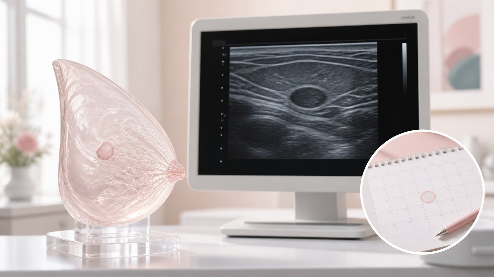

健康护理
乳腺结节是什么｜查出来先别慌，分清情况再说
体检单上出现「乳腺结节」，很多人一下子就慌了。其实结节很常见，绝大多数是良性的。这一篇帮你把「良性、需随访、要警惕」理清楚，让你心里有底，也不耽误该做的检查。

「结节」这个词，听起来像是个坏消息，其实它更像一个「描述」，而不是一个「诊断」。它指的就是在乳房里摸到、或者影像检查时看到的、和周围组织不大一样的小团块。一句话：结节本身不代表好坏，它只是告诉你「这里有个东西，需要看看它是什么」。这就像在身体上发现一个疙瘩，先看再看，而不是先怕。
好消息是，绝大多数乳腺结节都是良性的。很多人去检查、去随访，最后得到的都是「良性」的结论——常见的比如纤维腺瘤、导管内乳头状瘤、一些乳腺增生相关的改变，等等。这些大多是良性的、不一定是疾病的范畴，只要定期观察、按医嘱复查，一般不需要特别的处理。所以，看到「结节」两个字，别急着把自己往坏处想。
但「大多数良性」不等于「全都良性」，这也是判断要有层次的原因。所以医生一般会把结节分成几类来对待：一类是「良性、先观察」，定期随访就好，不用手术也不用吃药；一类是「需要随访、动态观察」，这次没关系，但医生会建议你隔一段时间再查一次，看它有没有长大、有没有变化；还有一类是「需要进一步查、要警惕」——这种往往伴有了一些可疑的特征，医生会建议做更详细的检查，必要的时候做活检，拿到明确的结论。
那具体怎么判断一个结节「要不要紧」？这得交给专业检查，别自己靠手感猜。常用的是乳腺 B 超和钼靶，医生会看结节的边界清不清楚、质地是软是硬、形态规不规整、有没有血流、有没有钙化，再综合你的年龄、家族史、之前的检查结果，给出下一步的建议。影像报告上一般会有分级，把可疑的程度分成了不同的档，级别越高，越需要警惕、越要认真对待——这个由医生来解释，比你自己看字母数字靠谱得多。
什么时候该去医院？如果摸到边界不清、质地硬、推不动的肿块；出现乳头自发的溢液，尤其是清水样、血性或单侧的；皮肤出现凹陷或橘皮样改变；或者之前查过的结节突然有了明显变化。出现任何一种，都别拖，尽早去乳腺科把情况弄清楚。即便医生说「再观察」，也要老老实实按时间复查，别因为「这次没事」就再也没下文了。
最后是最想跟你说的心态：不要自己吓自己，也不要拖延。前者是把还没确认的事情，先在心里放大成最坏的结果；后者则是明明该检查了，却因为害怕而一拖再拖。结节这件事，多数是良性的，但你不需要靠「安慰自己」来撑过去——正确的方式，是把判断交给专业检查，按医嘱该随访就随访、该查就查。弄清楚，才是真正的安心。
本文用于公众健康教育，不构成医疗建议，不替代面诊。医美决策请与具备资质的医师面诊后作出。